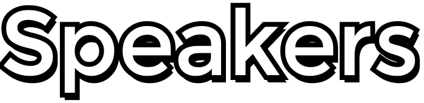
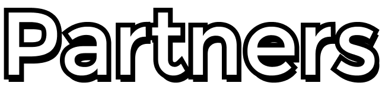

페스타를 통해 6월 8일 오픈
Scoll to Read

iOS iGA(아이가)는 개발자 뿐만 아니라 개발에 관심 있는 모두에게 열려있는 부산지역 커뮤니티입니다.
누구나 자유롭게 지식을 공유하고 성장할 수 있는 공간을 제공합니다.
이번 세미나에서는 ML 을 주제로 Swift 에서의 활용방안을 소개합니다.
기술들을 조합했을 때 새로운 시야가 펼쳐질 것을 기대합니다.
Swift 로 개발자를 시작하실 분, ML 을 활용해 iOS App 을 만들고 싶은 분,
개발자에 관심 있는 분, 심심하신 분 모두 환영합니다. 😁
새로운 만남과 인사이트를 얻어 가실 수 있는 세미나, iOS iGA(아이가) 에서 곧 만나요~ 👋🏻
테크토크 사전질문
7월 2일 오픈

| 14:00 ~ 14:10 | 오프닝 추영욱 | ML, Swift 개발자 |
| 14:10 ~ 14:40 | 기타치다가 Swift 개발자가 된 이야기#Swift GeekCode | Swift 개발자 |
| 14:40 ~ 15:10 | Chat GPT 로 iOS App 만들기#ML#iOS With 오거나이저 | Swift, ML 개발자 |
| 15:10 ~ 15:40 | 쉬는시간 |
| 15:40 ~ 16:10 | 마! 이게 생산성이다 - 생산성을 위한 CLI 구축#Swift Jihoon Ahn | Swift 개발자 |
| 16:10 ~ 16:40 | iOS개발자의 CoreML 고군분투기#Swift 햄식 | Swift 개발자 |
| 16:40 ~ 17:10 | ML on iOS#ML#iOS 이준원 | ML 개발자 |
| 17:10 ~ 17:20 | 쉬는시간 |
| 17:20 ~ 17:50 | 테크토크- 무엇이든 물어보세요#Talk 진행자: Leeo |
| 17:50 ~ 18:00 | 클로징 로사 | Swift 개발자 |
| 18:00 ~ 21:30 | 네트워킹 |
부산광역시 남구 대연제 3동 용소로 19번길 15,
카페위드(CAFE WITH) 2층
경성대, 부경대역 3번 출구에서 도보 8분
주차안내
행사장소에서 무료주차 제공
여유 자리가 없는경우 근처 유료주차장을 이용해 주세요.




후원안내
Swift와 ML에 관심이 있는 다양한 부산 개발자들이 한곳에 모일 수 있도록 함께해 주세요.
제공되는 후원 패키지를 통해 다양한 청중 사이에서 후원사의 브랜딩을 강화하고, 회사나 서비스를 홍보할 수 있습니다.
또한 참가자와 상호 작용하고, 잠재적으로 후원사에 새로운 개발자 또는 엔지니어를 모집하는 데 도움이 됩니다.